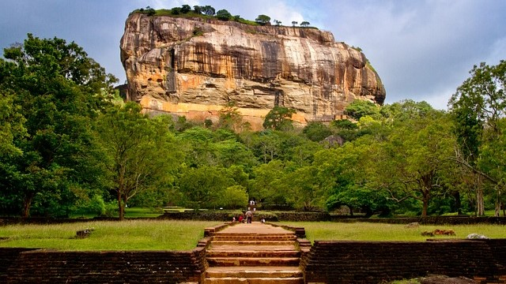
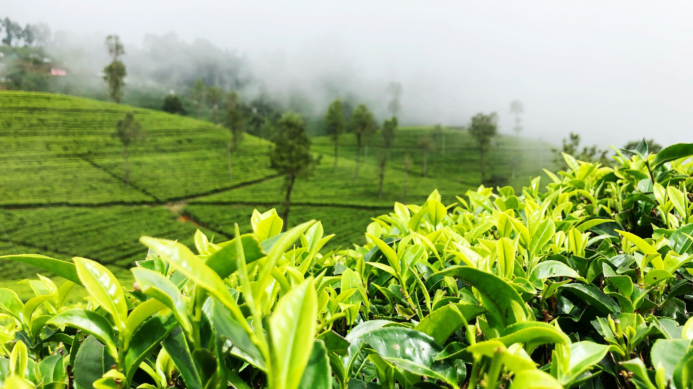

Sri Lanka's Top Countryside Attractions
Ella
Natural Wonders
Ella, a charming yet energetic city in Sri Lanka's gorgeous hill country, enthralls tourists with its unspoiled beauty, vibrant culture, and peaceful attitude. Ella offers a broad variety of activities that make an impact on every visitor, from stunning views of mist-covered mountains to immersive events in tea farms and strenuous treks to secret waterfalls.
Little Adam's Peak: Take a charming stroll to the summit of Little Adam's Peak, where you'll be rewarded with expansive vistas of verdant tea plantations, rolling hills, and the famous Ella Rock. All ages can enjoy the rather easy climb, which offers a captivating view of the sunrise or sunset.
Ella Rock: Hiking to Ella Rock is a must-do experience for the more daring among you. The trail winds through small settlements, tea estates, and lush forests before reaching the summit, where breathtaking views await you. Make sure to get going early to beat the midday heat and give yourself plenty of time to explore.
Ravana Falls: Nestled among lush vegetation, this magnificent waterfall plummets to a height of 25 meters. Enjoy a cool dip in the natural pool or just gaze in awe at this breathtaking waterfall.
Cultural Experiences
Tea Plantation Tours: Take a tour of a nearby tea plantation to get a firsthand look at the rich history and culture of Sri Lanka's tea industry. Savor the perfume of the verdant green tea fields, sample freshly brewed types, and learn about the tea-making process from plucking to packaging.
Ella Spice Garden: Take a tour of the Ella Spice Garden to see the colorful variety of spices that thrive in the rich soil of Sri Lanka. Take part in a sensory experience while discovering the culinary applications, traditional medical uses, and cultural significance of spices in Sri Lankan cuisine.
Culinary Delights
Local Cuisine: Visit Ella's neighborhood restaurants and street food stands to treat your taste buds to the delights of Sri Lankan cuisine. The cuisine is a reflection of the island's rich culinary legacy, ranging from fiery sambols and crunchy rotis to aromatic rice and curry dishes.
Cooking Classes: Take a cooking class taught by local chefs to delve deeper into Sri Lanka's culinary heritage. Learn how to make regionally-sourced, genuine dishes while gaining knowledge of the many tastes and cooking methods that characterize Sri Lankan cuisine.
Tranquil Retreats
Eco-Lodges: Discover eco-lodges that offer sustainable elegance amidst Ella's lush hills. These environmentally friendly lodging options, which range from private rainforest hideaways to quaint cottages with expansive vistas, provide a peaceful haven within the natural world.
Yoga and Wellness Retreats: Take a yoga and wellness retreat in Ella to revitalize your body, mind, and spirit. In the tranquil setting of the hill country, immerse yourself in daily yoga classes, meditation techniques, and holistic therapies.
Practical Tips
Best Time to Visit: December through March are the best months to visit Ella because of the lovely, dry weather that is perfect for outdoor activities and sightseeing.
Transportation: Major cities like Colombo and Kandy have regular train and bus services that make it simple to go to Ella. Once in Ella, take a stroll about the town, hail a tuk-tuk, or rent a bicycle to get around the town's rolling topography.
Accommodations: Ella offers a variety of lodging choices, such as eco-lodges, guesthouses, and boutique hotels. Make sure to reserve well in advance, particularly during the busiest travel times.
Ella, Sri Lanka, presents a remarkable travel experience that begs to be explored with its beautiful scenery, vibrant culture, and calm atmosphere. Ella is a must-visit location on your trip through Sri Lanka since it has something to offer every type of traveler, whether they are looking for adventure, relaxation, or cultural immersion.
Sigiriya

Natural Enchantments
Adventure to the summit of Sigiriya Rock Fortress, a UNESCO World Heritage Site that towers impressively above the surrounding plains. Views of the verdant countryside below will greet you as you mount the old stairway decorated with elaborate murals. At the summit, where the stunning views go on forever, explore the ruins of King Kasyapa's fabled palace.
Pidurangala Rock: Just a short distance away, Pidurangala Rock offers a distinctive viewpoint of Sigiriya. Unmatched vistas of Sigiriya Rock rising out of the jungle canopy may be seen during the trek to the summit, making for an incredibly beautiful sight. Watch in wonder as the dawn illuminates the surrounding area with shades of gold, creating a mesmerizing glow that covers the historic ruins below.
Minneriya National Park: This park, which is home to a flourishing population of elephants, leopards, and other bird species, invites visitors to see the wonders of Sri Lanka's wildlife. Set out on a safari experience through the park's lush terrain to witness magnificent herds of elephants grazing by the serene waters of the Minneriya Tank. This will be a sight to remember.
Cultural Encounters
Explore Sri Lanka's rich cultural legacy by taking a historic Cities Tour, which takes you to the historic capitals of Anuradhapura and Polonnaruwa, which were the political and religious centers of ancient Ceylon. Discover the breathtaking remnants of historic stupas, monastic complexes, and temples that all attest to the island's illustrious past.
Experience a Rural Village: Take a trip to a traditional village close to Sigiriya to fully immerse yourself in the colorful culture of rural Sri Lanka. Talk with amiable residents while you take part in a culinary demonstration, discover traditional farming techniques, and savor a substantial lunch made with fresh, regional ingredients.
Culinary Delights
Spice Garden Tour: Visit a nearby spice garden to begin a sensory adventure through the tastes of Sri Lankan cuisine. Learn about the culinary and medical applications of the exotic spices and herbs that are the foundation of Sri Lankan cuisine.
Farm-to-Table Dining: At one of Sigiriya's little restaurants, savor the tastes of the area while dining at the farm. Savor delicious cuisine made with organic, fresh produce that is directly purchased from nearby farmers, giving you a genuine taste of Sri Lankan hospitality.
Tranquil Retreats
Luxury Resorts: Take a break at one of the area's well-known eco-luxury resorts to unwind in style amid the tranquil surroundings of Sigiriya. Enjoy superb cuisine made with the best local ingredients, restore your senses with holistic spa treatments, and lose yourself in the natural beauty of the surroundings.
Ayurvedic Health Retreats: Take an Ayurvedic health retreat in Sigiriya to rebalance your body, mind, and soul. Savor the pleasure of tailored treatments, yoga sessions, and meditation practices accompanied by lush tropical gardens as you go on a holistic healing journey led by knowledgeable practitioners.
Useful Advice
Best Time to Visit: May through September, during the dry season, is the greatest time to visit Sigiriya because of the warm, dry weather that is perfect for sightseeing and outdoor sports.
Transportation: Major cities like Colombo and Kandy have easy road access to Sigiriya. Another option for visitors is to take the picturesque train to Habarana, which is close by, and then take a short drive to Sigiriya.
Accommodations: Sigiriya has a variety of lodging choices to fit every taste and budget, including eco-friendly lodges, quaint boutique hotels, and opulent resorts. Make reservations well in advance, particularly during the busiest travel times.
A genuinely enchanted vacation awaits you in Sigiriya, Sri Lanka, where stunning scenery and rich history come together to make lifelong memories. Discovering the world-famous Sigiriya Rock Fortress, exploring the area's rich cultural legacy, or just taking in the peace and quiet of the countryside—Sigiriya welcomes you to set off on an adventure of exploration unlike any other.
Kandy

Natural Wonders
Kandy Lake: Take a leisurely stroll around the stunning Kandy Lake, sometimes referred to as the Sea of Milk or Kiri Muhuda locally, to start your trip. Encircled by dense foliage and interspersed with picturesque islets, the lake offers a serene haven within the metropolis, ideal for leisurely picnics and picturesque gondola excursions.
Hanthana Mountain Range: Head into the tranquil wilderness of the Hanthana Mountain Range to get away from the bustle of the city. Trekking through verdant forests and tea plantations will reward you with breathtaking views of the surrounding landscape at every bend.
Peradeniya Botanical Gardens: One of the best in Asia, the Peradeniya Botanical Gardens offer a kaleidoscope of hues and scents. Admire the wonders of nature as you stroll through well designed gardens that are home to a wide variety of tropical plants, towering trees, and rare orchids.
Cultural Encounters
Temple of the Tooth Relic: Also referred to as Sri Dalada Maligawa locally, this site honors one of Buddhism's holiest relics. With its elaborate carvings, elaborate construction, and spiritual atmosphere, this esteemed pilgrimage site draws both visitors and devotees. It is home to the sacred tooth relic of the Buddha.
Take part in the colorful celebrations of the Kandy Esala Perahera, one of Asia's most magnificent cultural pageants. This spectacular parade, which honors the Buddha's tooth relic with traditional music, dancing, and magnificent elephant parades, takes place every year in July or August and provides an enthralling look into Sri Lanka's rich cultural past.
Culinary Delights
Local Cuisine: Savor the flavors of Sri Lankan food in the thriving food markets and traditional restaurants in Kandy. The local food is a delectable fusion of flavors and influences that reflect the island's eclectic culinary heritage, ranging from spicy sambols and sweet delights to aromatic rice and curry dishes.
Cooking Classes: Learn the secrets of traditional Sri Lankan dishes and cooking methods as you set off on a culinary exploration with a cooking class taught by local chefs. This hands-on event, which includes everything from choosing fresh products at the market to perfecting the art of spice mixing, is sure to please foodies of all stripes.
Tranquil Retreats
Boutique Hotels: Indulge in opulence at one of Kandy's boutique hotels, nestled amid tranquil surroundings and offering tasteful lodgings and individualized service. Whether tucked away in verdant gardens or with sweeping views of the city, these cozy hideouts provide a tranquil haven from the bustle of everyday life.
Meditation Retreats: Take a meditation retreat in Kandy to reconnect with your inner self and discover serenity amid the commotion. Go to peaceful ashrams and meditation facilities tucked away in the middle of the forest, where knowledgeable teachers lead you on a journey of introspection and self-realization via mindfulness exercises and quiet reflection.
Useful Advice
Best Time to Visit: December through April, during the dry season, is the ideal time to visit Kandy because of the warm, sunny weather that is perfect for taking in the city's outdoor attractions and cultural activities.
Transportation: From large cities like Colombo and Nuwara Eliya, Kandy is easily accessible by train, bus, or vehicle. After arriving in Kandy, take a leisurely stroll around the city's attractions, hire a tuk-tuk, or take a breathtaking drive through the surrounding countryside.
Accommodations: From opulent resorts and boutique hotels to cozy guesthouses and homestays, Kandy has a vast array of lodging choices to fit every taste and budget. Make reservations well in advance, particularly during the busiest travel times and during celebrations.
Kandy, Sri Lanka, invites you to embark on a journey of discovery and enlightenment, where ancient traditions and natural beauty converge to create an unforgettable travel experience. Whether you're exploring sacred temples, indulging in culinary delights, or simply soaking in the serene ambiance of the city, Kandy promises to captivate your senses and leave a lasting impression on your heart and soul.
Haputale

Natural Enchantments
Lipton's Seat:
Take a picturesque drive to this viewpoint, which has the name of the well-known tea tycoon Sir Thomas Lipton. From this vantage position, which is perched atop the Haputale Mountain Range, you can see for miles across distant peaks and valleys, as well as emerald-green tea farms that cascade down the slopes.
Adisham Bungalow:
Take in the serene splendor of this home from the colonial era set among rolling hills and lush gardens. Originally constructed as a rural getaway by a British plantation owner, the bungalow is now a monastery home to Benedictine monks, providing guests with a window into its fascinating history and tranquil atmosphere.
Baker's Falls:
Tucked away inside the Horton Plains National Park, Baker's Falls is a charming cascade with captivating beauty. The sound of tumbling water becomes more audible as you travel through misty moorlands and lush woodlands, bringing you to this amazing natural wonder where glistening clear streams crash into a rocky valley below.
Cultural Experiences
Dambatenne Tea Factory:
Visit the Dambatenne Tea Factory to become fully immersed in the rich culture and history of Ceylon tea. Explore the factory's facilities, from rolling and withering to fermenting and drying, and learn about the craft of tea production and processing while tasting the best freshly brewed tea kinds while taking in expansive views of the neighboring tea farms.
Lanka Ella:
Take a trip through culture to this charming village set amidst the misty hills of Haputale. Discover charming rural towns and historic villages where kind residents will greet you with open arms and smiles while sharing insights into their way of life, traditions, and customs.
Culinary Delights
Tea Estate Dining:
Amidst Haputale's breathtaking scenery, savor the tastes of Ceylon tea with an estate dining experience. Enjoy a lavish spread of classic Sri Lankan foods that are filled with flavorful spices and herbs, and enjoy your meal with freshly brewed tea that comes from nearby plantations.
Local markets:
Take a tour of Haputale's lively markets, where busy kiosks teeming with locally produced goods, unique spices, and fresh fruit await you. The region's food, which features delectable dishes like kokis and kavum as well as savory rotis and crispy hoppers, is a mouthwatering blend of flavors that honors the region's rich cultural legacy.
Tranquil Retreats
Eco-Lodges:
Hide away in eco-lodges surrounded by the unspoiled splendor of Haputale's valleys and hills. Reconnect with nature and get away from the bustle of the city in eco-friendly lodgings that are harmoniously integrated into the surroundings and provide a tranquil haven for rest and relaxation.
Yoga and Wellness Centers:
Take a yoga and wellness retreat in Haputale to rejuvenate your body, mind, and soul. Indulge in daily yoga sessions, meditation sessions, and holistic therapies in the peaceful hill country environs. The crisp mountain air and peaceful atmosphere provide the ideal setting for self-revelation and renewal.
Useful Advice
Best Time to Visit: The dry season, which runs from December to March, is the ideal time to visit Haputale because of the nice, temperate weather that is perfect for sightseeing and outdoor sports.
Transportation: From large towns like Colombo and Kandy, Haputale is easily accessible by vehicle, train, or bus. Once in Haputale, take a stroll on foot, rent a tuk-tuk, or ride a bicycle to see the surrounding countryside and take in the natural beauty of the area.
Accommodations: Haputale has a variety of lodging choices to fit every taste and budget, including eco-lodges, spa centers, and charming guesthouses and boutique hotels. Make careful to reserve well in advance, particularly for holidays and busy travel times.
Haputale, Sri Lanka, extends an invitation for you to set off on a voyage of exploration and tranquility amid its stunning misty hills and lush scenery. Explore tea estates, take in the customs of the local people, or just relax in the embrace of nature—Haputale offers a once-in-a-lifetime vacation that will leave you feeling refreshed on all levels.